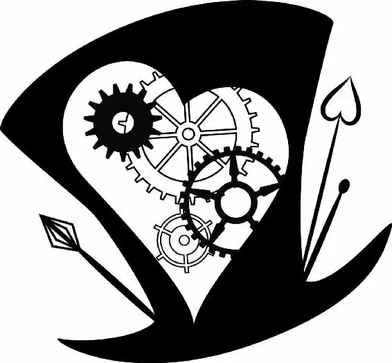

An eerie stillness hung in the Chamber of the Grand Clock. Then ...
tick
tock
Tick
Tock
Ticktock.
TICKTOCK.
Glowing under a layer of rust, like a clothcovered lantern, the Chronosphere hummed to life, and the Grand Clock started up. Rust f laked off the machinery as cogs wheeled and barrels lifted.
The tip of Alice’s f inger turned from red to pink as the rust moved backward, washed away by the restoration of time. Slowly, Alice returned to herself. After taking in a gulp of air, she looked around. Had she done it? Had she f ixed Time?
Time coughed as the rust melted off him. Beyond him, she could see Wilkins, Seconds, Minutes, and Hours wriggling to life.
Alice picked her way over to Time, who was now sitting up. “Are you all right?” she asked.
He looked slightly dazed, but his eyes lifted in gratitude to meet hers and he nodded before conducting a self-inspection, patting himself down and checking his heart clock.
Alice stepped away to f ind her friends. As the coppery red wave receded across the chamber, it liberated everyone. When their eyesight cleared, Mirana and Iracebeth spotted each other, and Mirana rushed to her sister.
“Can you ever forgive me, Racie?” she asked.
With pursed lips, Iracebeth studied her.
“I can,” she said. The words seemed to surprise even her. “I can!” she repeated happily. The sisters embraced, smiles stretching across their faces.
There was a clattering of many footsteps in the hall, and then a large group tumbled into the room.
“Tarrant!” Zanik called out loudly, his face eager.
Hatter whirled. “Father!” he cried, running toward him. “This whole time, I thought you were—but you weren’t—and you couldn’t come see me because you were—and you kept the hat!” Hatter tripped over his words as he hugged his father tightly.
“Of course I kept it,” Zanik said. “It was a gift from you. But the greatest gift we have is the time we have together. And I promise, I’ll never waste another second.” He stepped back, his hands resting on Hatter’s shoulders. “We have a lot of catching up to do,” he continued.
“I make hats, Father! I’m a hatter!” Hatter exclaimed proudly.
Tears pricked Zanik’s eyes. “I want to see every one, Tarrant,” he said in a choked voice. “I want to see every hat you’ve ever made.”
“I promise,” Hatter said as Zanik pulled him into another hug.
Gazing across the room, Alice watched her friends reunite with their families. With a pang, she thought of her mother, wishing she were there to hold her close. The world had nearly ended, and Alice and her mother had not parted on good terms.
Time walked over to Alice. Sure he was going to scold her, she hung her head. The whole mess was her fault.
“All that is really worth doing is what we do for others,” he said simply.
“I owe you an apology,” she said. “You tried to warn me about the Chronosphere, but I didn’t listen.”
“No worries, my dear.” Time winked at her. “I heal all wounds.”
Alice smiled. “You know,” she said. “I used to think you were a thief, stealing everything I loved. But you give before you take. And every day is a gift. Every hour, every minute, every second.”
Reaching into her pocket, she pulled out her father’s broken pocket watch. She ran her f inger over the case one last time and then handed it to Time.
“Ah, the fallen soldier,” Time said as he took it. “I suppose you want me to f ix it.”
“No,” Alice answered. “I want you to have it.”
Time blinked in shock. “You said it was your father’s,” he said in surprise.
“It was my father’s, but it’s not my father.” Alice’s eyes wandered to the happy families around the room. It was important to spend time with the loved ones you had. “I’ve been holding on too tightly to all the wrong things,” she said. She turned back to Time with a determined smile.
Time regarded the pocket watch again; then he waved his hand in the air above it.
Tick, tick, tick, beat the little watch.
With gentle hands, Time lovingly tucked it into his breast pocket. Emotion lit his eyes as they met Alice’s. “My dear girl,” he said. “They say I am a friend to no man. But I shall remember you. Always.”
Time bowed his head in farewell and then walked to Wilkins and the Seconds, who were gathered by the Grand Clock.
Alice felt someone take her hand and she turned to see Hatter’s beaming face.
“Come, Alice,” he said. “You must meet my family, you’ll love them. We’re going to have so much fun together!”
Alice’s mouth wobbled. “Hatter, I think it’s time for me to go home,” she said.
“Oh, but I’m forgetting you have a family of your own, don’t you?” he said.
Alice nodded.
“Very important thing, a family,” Hatter continued.
“I won’t see you for tea tomorrow, will I?” he asked, smiling softly.
“I don’t think so.” Alice f lung her arms around his neck, a few tears sliding down her face.
“Don’t worry, Alice.” Hatter patted her shoulder. “In the palace of dreams we shall meet, and laugh, and play all our lives.”
Alice stepped back to gaze up at him. “But a dream is not reality,” she said.
“Ah, but who’s to say which is which?” Hatter winked.
Alice smiled, happy to have restored Hatter to himself, but sad that she would have to leave Underland. She was going to miss it and him—all over again.
